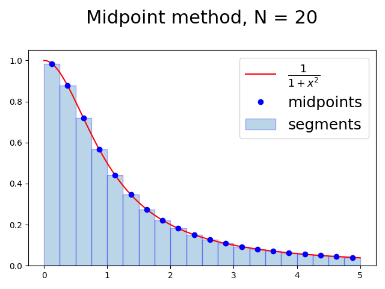
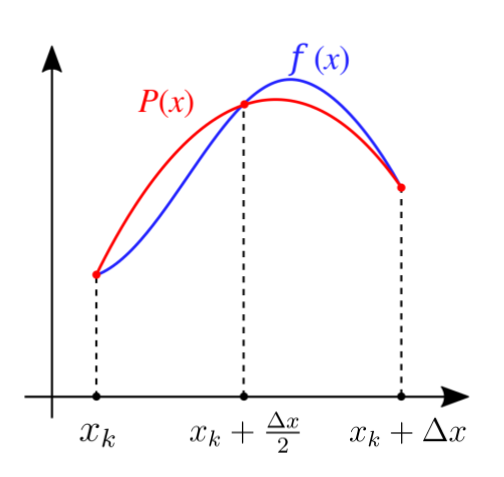

Motivation
- We often want to analyze data points in the form shown below, where we have some dependent variables yi corresponding to some independent variables xi.
- The goal is to find a function f(x) that either
- passes through all the points exactly (interpolation)
- approximates data in a “best” possible way but not exactly (curve fitting)

How interpolation and curve-fitting are useful?
- If we can find a function f(x) that interpolates or approximates the data well,
- We can try to predict new data points (xk,yk).
- We can better understand the underlying process that might have generated the data.
Polynomial interpolation
- The simplest form of interpolation function is a polynomial function.
- It is always possible to construct a polynomial P(x) of degree n that passes through n+1 data points.
Lagrange’s method
-
Suppose we have a dataset of n+1 points:
(x0,y0),(x1,y1),(x2,y2),...,(xn,yn) -
We construct an interpolation polynomial of degree n, called the Lagrange polynomial, using the formula:
P(x)=c0(x)y0+c1(x)y1+...+cn(x)ynwhere ci(x) are called the cardinal functions.
The cardinal functions are given by:
- Numerator contains all terms except (x−xi)
- Denominator contains all terms except (xi−xi)
Claim: P(x) passes through each data point
If P(x) passes through all points (xi,yi), then we must have:
Let’s see if this is true for the Lagrange polynomial we just found.
In the above equation for ci(x), setting x=xi and x=xj, i=j, we have
and
Now, using the equation of P(x) for x=xi:
Lagrange polynomial — Example
Consider the following dataset. We have 4 data points so the degree of the Lagrange polynomial P(x) will be n=3.
We first write 4 cardinal functions corresponding to these 4 data points using x-values.
We then use these four cardinal functions along with the y-values yi in the equation of P(x):
Download file lagrange_polynomial.py from Ed to plot these points and the interpolation function to check if it works.
Curve fitting
- If data is obtained experimentally, there could be random noise present due to measurement errors.
- Interpolation would not be a good choice as it would fit all data points including noise as well.
- Instead, we use curve fitting, to find a smooth curve that fits the “average” of the data points, and that is less affected by the noise or “outlier” points.
- Linear regression is a simpler case of curve fitting where a straight line is found that fits a set of data points.
- Unlike interpolation, the line need not pass through the points.

- Linear regression line is given by f(x)=ax+b, where a is the slope of the line, and b is the y-intercept.
- The main task will be to find a and b such that the line “fits” the data points in the “best” possible way.
How to determine the “best” fit?
-
To know how good a line fits the given data points, we compute error for each data point.
-
Error is defined as the squared difference between the actual y-value yi and the y-value given by the regression line, f(xi).

The total error E for all data points is given by
One way to define “best” fit:
- Given all the data points (xi,yi), we want to find a line (i.e. find a and b) such that the error E(a,b) is minimized.
To find a and b that minimize E(a,b), we calculate the partial derivatives of E with respect to a and b and solve for a and b when derivates are zero:
Calculating the partial derivatives
Setting above derivatives to 0 and solving for a and b,
where xˉ and yˉ are the averages of x-values and y-values of data points.
Finally, using these a and b, we get the desired best-fit line as f(x)=ax+b. Here a is slope of the line and b is the y-intercept.
Download linear_regression.py from Ed, which plots data and regression line.
Interpolation examples using Numpy/SciPy
- numpy_linear_interpolation.py: Piecewise linear interpolation.
- cubic_spline_interpolation.py: Cubic spline interpolation — piecewise polynomial interpolation where each piece is a cubic polynomial (a+bx+cx2+dx3, d=0)
Definite Integral
-
The definite integral of a function of a single variable, f(x), between two limits a and b can be viewed as the area S under the curve.
-
Numerical integration algorithms try to estimate this area

Numerical Integration
Our approach will be as follows:
- Divide the region between a and b into N segments
- We then estimate the area under the curve in each segment
- Finally, we sum these areas
We will consider three algorithms for estimating this area in each segment:
- The Midpoint method
- The Trapezoidal method
- Simpson’s method
Example
We will use the following function in the interval [0,5] to compare the three algorithms:

The Midpoint Method
-
We first divide the region from a to b into N equal rectangular segments
-
The width of each segment is Δx=Nb−a
-
The endpoint of the segments are
x0=a<x1<⋯<xN−1<xN=bwhere
xi=a+i⋅Δx,i∈[0,N]
-
We estimate the area under the curve in each rectangular segment using the value of f(x) at the midpoint of each segment.
areak=Δx⋅f(xk+2Δx) , k∈[0,N) -
To compute an approximation to the integral, we just have to sum these areas
Approximation improves as the number of segments is increased.
Implementation and Error analysis of Midpoint method
1def midpoint_integrate(f, a, b, N):2 area = 0.03 dx = (b - a) / N4 x = a56 for k in range(N):7 area += dx * f(x + dx / 2)8 x += dx910 return area
We know the integral of the example function is given by:
So, we can compute error in the result produced by our implementation midpoint_integrate.
Error of Midpoint method for different values of N:
N estimated_integral error ----- -------------------- ---------------- 10 1.3735434283e+00 1.4266136666e-04 20 1.3734392602e+00 3.8493263529e-05 40 1.3734103959e+00 9.6289197895e-06 80 1.3734031745e+00 2.4075766312e-06 160 1.3734013689e+00 6.0191232953e-07 320 1.3734009174e+00 1.5047571300e-07 640 1.3734008046e+00 3.7615273785e-08 1280 1.3734007764e+00 9.4000809359e-09 2560 1.3734007693e+00 2.3462840559e-09 5120 1.3734007675e+00 5.8283222693e-10 10240 1.3734007671e+00 1.4196355203e-10
Trapezoidal Method
To approximate the area of each segment, use the area of trapezoid rather than the rectangle.

The area of each trapezoidal segment is given by
Implementation and error analysis of the Trapezoidal method
area += dx * (f(x) + f(x + dx)) / 2
N estimated_integral error ----- -------------------- ---------------- 10 1.3731040812e+00 2.9668571989e-04 20 1.3733237548e+00 7.7012176612e-05 40 1.3733815075e+00 1.9259456542e-05 80 1.3733959517e+00 4.8152683754e-06 160 1.3733995631e+00 1.2038458712e-06 320 1.3734004660e+00 3.0096677106e-07 640 1.3734006917e+00 7.5245528253e-08 1280 1.3734007481e+00 1.8815126790e-08 2560 1.3734007622e+00 4.7075219278e-09 5120 1.3734007658e+00 1.1806169375e-09 10240 1.3734007667e+00 2.9889868358e-10
Simpson’s method
Given any three points there is a unique polynomial (parabola), called the interpolating polynomial, that passes through these points
-
Simpson’s method fits a parabola P(x) through the curve at three points — the value of the function at the two endpoints, and at the midpoint of the interval:
f(xk), f(xk+2Δx), f(xk+Δx) -
The area under the parabola in the interval [xk,xk+Δx] is given by:
6Δx[f(xk)+4f(xk+2Δx)+f(xk+Δx)] -
Adding areas of all the N segments gives an approximation to the integral.
-
Simpson’s method generally finds a better approximation to the area under the curve in each segment than trapezoidal method which uses a line instead of parabola.
-
For more details on where does the formula above come from: https://en.wikipedia.org/wiki/Simpson%27s_rule
Implementation and error analysis of the Simpson’s method
area += dx * (f(x) + 4 * f(x + dx / 2) + f(x + dx)) / 6
N estimated_integral error ----- -------------------- ---------------- 10 1.3733969793e+00 3.7876621872e-06 20 1.3734007584e+00 8.5498519375e-09 40 1.3734007664e+00 5.3898707719e-10 80 1.3734007669e+00 3.8371528177e-11 160 1.3734007669e+00 7.0714545330e-12 320 1.3734007669e+00 5.1121329392e-12 640 1.3734007669e+00 4.9893422727e-12 1280 1.3734007669e+00 4.9857895590e-12 2560 1.3734007669e+00 4.9855675144e-12 5120 1.3734007669e+00 4.9795723100e-12 10240 1.3734007669e+00 4.9829029791e-12
Check implementation and example in numerical_integration.py and integration_examples.py
Accuracy of the three methods
-
For all the three methods we saw, as the number of subintervals N approaches infinity, approximation improves and approaches actual integral.
-
However, the speed of improvement differs:
- Midpoint method — error∝N21
- Trapezoidal method — error∝N21
- Simpson’s method — error∝N41
-
Simpson’s method approaches the integral faster than other methods.
Integration using scipy.integrate
Check scipy_integrate.py file on Ed.